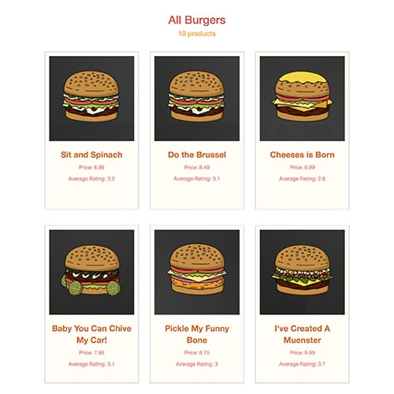
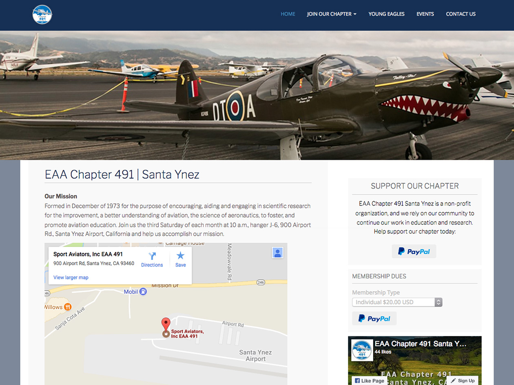
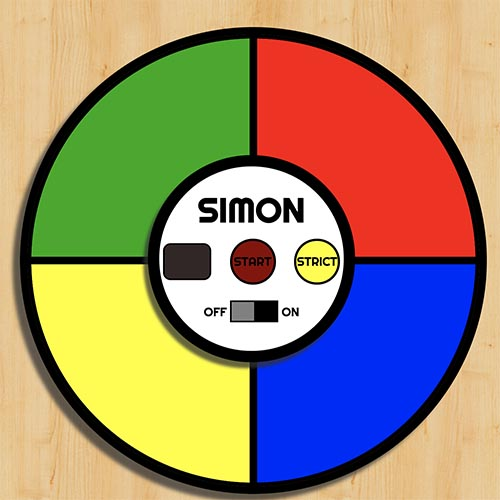

Hello - I'm Kait.
I love using full stack development to tell powerful stories well.I am creativewith a background in public media.
I love finding creative solutions to modern problems, and I really believe that innovation can make the internet a better place.
I am adaptableconfident in multiple mediums.
Whatever the language or framework, I love using code to bring new dimensions to communications.
I am curiousand persistent in problem solving.
I love to learn with a team, getting to the bottom of problems together. I'm not afraid to experiment, ask questions or reach out for help.
Years of Experience
Languages - CompSci and Cultural
Mediums & Platforms
Clients & Partnerships
My Work
Here are some past projects.
Plot Lines
For fans of books, films and television shows alike, Plot Lines allows users to track the ever-changing relationships between all of their favorite characters.

Bob's Burger Emporium
Bob's Burgers Emporium is an e-commerce site developed in 10 days as a final project for the Grace Hopper Program at Fullstack Academy.

{kind=link}
EAA Chapter 491
A WordPress website designed for members of local chapter 491 of the EAA (Experimental Aircraft Association).
{kind=link}
Mildred Fish-Harnack Pages
A series of pages built for exploring supporting materials around Wisconsin Public Television's Mildred Fish-Harnack Documentary.
{kind=link}
WPT Digital Archives
A navigable hub for all of Wisconsin Public Television's digitized archives, organized by topic and decade.

Simon Says Game
A guessing game developed in JavaScript as a part of the Free Code Camp front-end curriculum.
{kind=link}